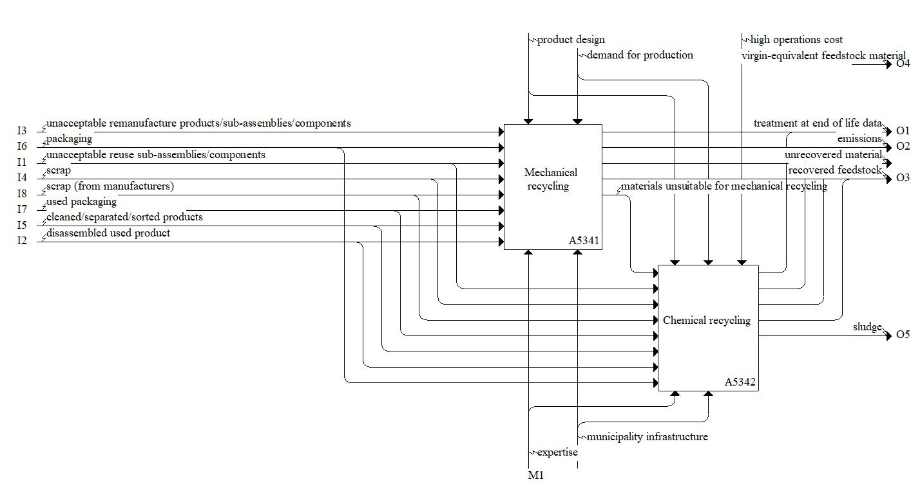

Description
The recycle model consists of the activities necessary to recycle a product, including mechanical or chemical processes of the recyclable parts. Click the individual Concepts for descriptions and examples of inputs, outputs, controls, and mechanisms relevant to a circular economy.Parent Activity: Recycle